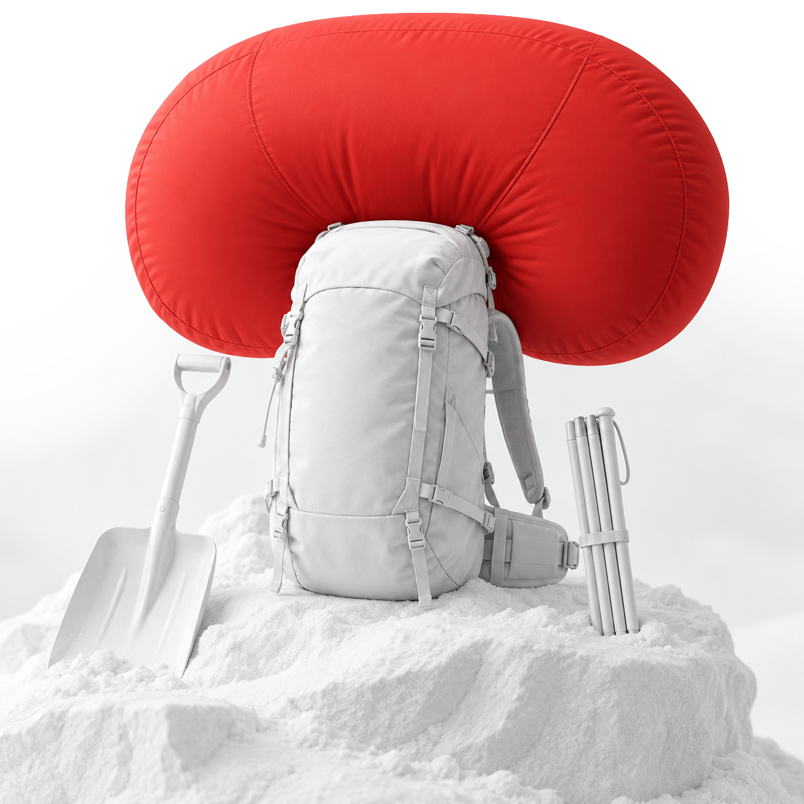
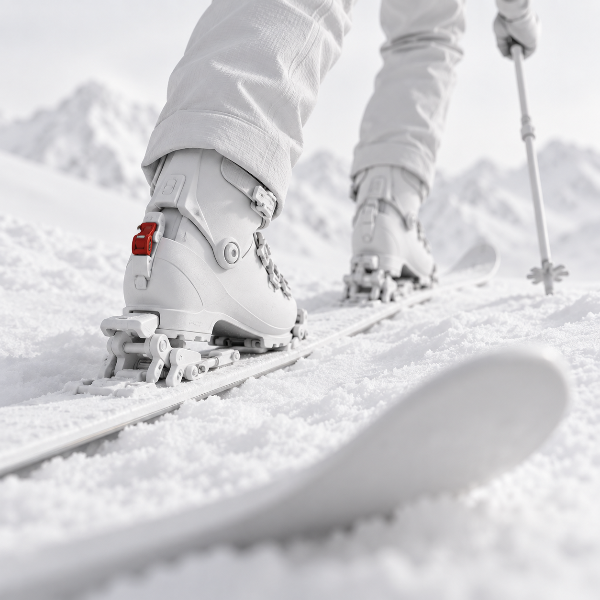

Plecak lawinowy
Może zmniejszyć ryzyko całkowitego zasypania. Uzupełnia wyposażenie ratownicze — nie zastępuje go.


WŁASNA LINIA. ŚWIADOMA DECYZJA.
Risk is always there.
Be prepared for it.
Nie wszystko da się przewidzieć.
Możesz być gotowy na więcej.
Śnieg, pogoda i teren stawiają własne warunki. Możesz je uważnie ocenić, przygotować sprzęt i wybrać moment. Możesz też zawrócić.
Mammut nie obiecuje jazdy bez ryzyka. Tworzy odzież i sprzęt, które wspierają Cię wtedy, gdy wiedza i przygotowanie spotykają się z prawdziwymi warunkami.
Zanim ruszysz ↗
AIRBAG / ILUSTRACJA KONCEPCYJNA+02 / PRZYGOTOWANIE
Gdy liczą się sekundy,
liczy się przygotowanie.
Plecak lawinowy może zmniejszyć ryzyko całkowitego zasypania. Detektor, sonda i łopata wspierają poszukiwanie i wydobycie zasypanej osoby. To różne role we wspólnym przygotowaniu.
Sprzęt nie zapobiega zejściu lawiny i nie gwarantuje przeżycia. Potrzebujesz również oceny warunków, partnera i przećwiczonych umiejętności ratownictwa lawinowego.
Przygotuj się przed zjazdem ↗Może zmniejszyć ryzyko całkowitego zasypania. Uzupełnia wyposażenie ratownicze — nie zastępuje go.
Pomaga zlokalizować osobę zasypaną, która ma nadający detektor. Znajomość obsługi wymaga regularnych ćwiczeń.
Służy do dokładnego zlokalizowania zasypanej osoby w śniegu.
Umożliwia odkopanie osoby po jej zlokalizowaniu. Skuteczna praca zespołu wymaga treningu.
ZATRZYMAJ SIĘ NA MOMENT.
Rytm podejścia na fokach. Chwila ciszy na grani.
Ocena stoku. Rozmowa z partnerem.
Zjazd zaczyna się wcześniej, niż ruszą narty.
W sprawdzeniu warunków, przygotowaniu lawinowym
i decyzji, czy to właściwy moment.

SKITOURING / WŁASNY RYTMFreeride i skitouring to własna linia, ale też świadomy wybór terenu, warunków i możliwości. Także wtedy, gdy najlepszą decyzją jest zmiana planu.
Pogoda, teren i aktualna sytuacja lawinowa wyznaczają kontekst. Plan dopasowujesz do tego, co zastajesz.
Wiedza, sprawny sprzęt, komunikacja i partner. Przygotowanie to wspólna odpowiedzialność.
Ruszamy, zmieniamy linię albo odpuszczamy. Dobra decyzja nie zawsze zostawia ślad na śniegu.
NA TWOJĄ KOLEJNĄ DROGĘ.
Poznaj odzież i wyposażenie Mammut
do freeride’u i skitouringu.